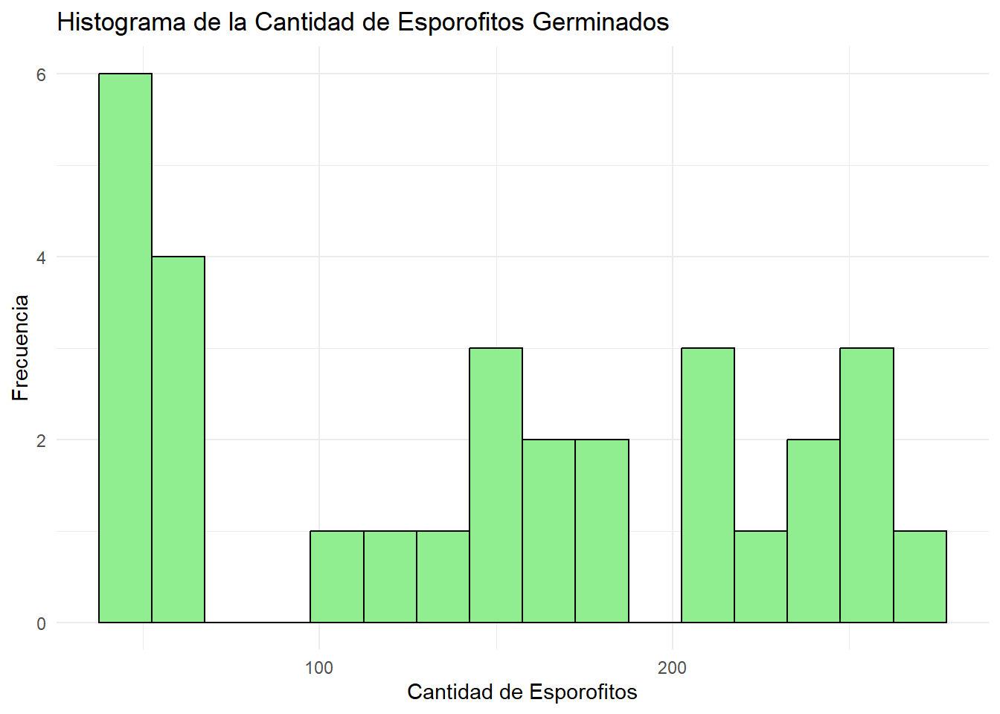
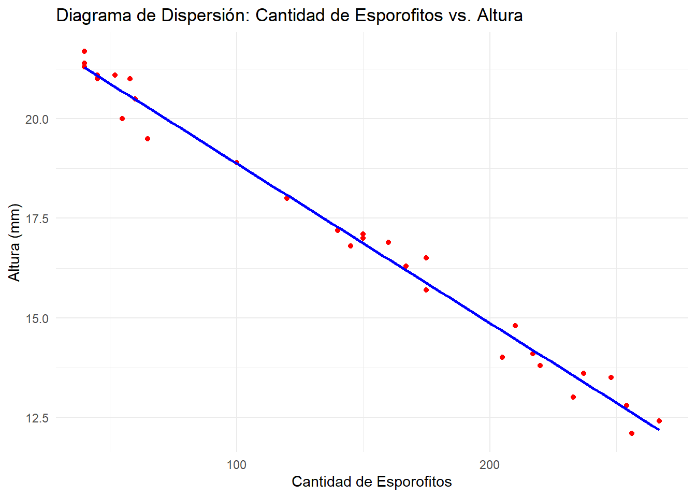
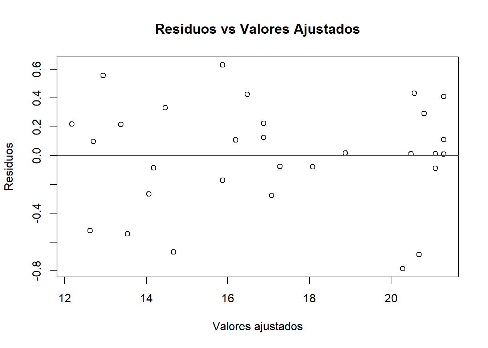
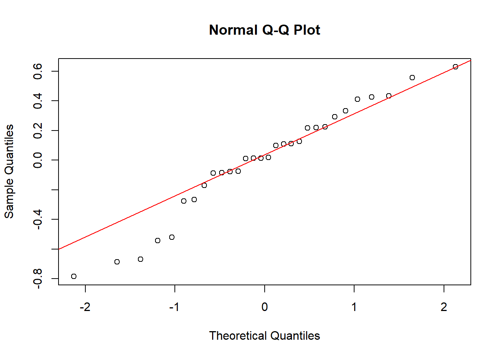

# Instalación y carga de paquetes necesarios
# Para leer archivos Excel
if(!require(readxl)) install.packages("readxl")
# Para visualización de datos
if(!require(ggplot2)) install.packages("ggplot2")
# Para manipulación de datos
if(!require(dplyr)) install.packages("dplyr")
# Para diagnósticos de regresión
if(!require(car)) install.packages("car")
# Para pruebas de supuestos
if(!require(lmtest)) install.packages("lmtest")
# Para pruebas de normalidad
if(!require(nortest)) install.packages("nortest")
# Para estadística descriptiva
if(!require(psych)) install.packages("psych") 20 Regresión lineal usando R
La regresión lineal constituye una de las técnicas estadísticas fundamentales para el análisis de la relación entre variables cuantitativas. Su objetivo principal es modelar la relación existente entre una variable dependiente (también denominada respuesta) y una o más variables independientes (o predictoras), permitiendo así predecir valores de la variable dependiente a partir de valores conocidos de las independientes (Kutner et al., 2005; Montgomery et al., 2012).
20.1 Definición y Objetivos
El análisis de regresión lineal busca cuantificar y describir la relación lineal entre variables, proporcionando una ecuación matemática que representa dicha relación. En el caso más simple, la regresión lineal simple, se estudia la relación entre dos variables: una dependiente Y y una independiente X. El modelo se expresa generalmente como:

En esta ecuación, Y representa la variable dependiente, X es la variable independiente, ß0 es la intersección (el valor de Y) cuando X es cero) y ß1 es la pendiente que indica el cambio en Y por cada unidad de cambio en X. El término epilson (ε) representa el error del modelo, que captura la variabilidad en Y que no se explica por X (Kutner, Nachtsheim, Neter, & Li, 2005).
La regresión lineal es ampliamente utilizada en diversas disciplinas, como economía, biología, ingeniería y ciencias sociales, debido a su capacidad para identificar tendencias, realizar pronósticos y evaluar la fuerza y dirección de las relaciones entre variables (Kutner et al., 2005; Hernández et al., 2024).
20.1.1 Tipos de Regresión Lineal
Existen dos tipos principales de regresión lineal: la regresión lineal simple y la regresión lineal múltiple. La regresión lineal simple involucra una sola variable independiente, mientras que la regresión lineal múltiple considera dos o más variables independientes para explicar la variabilidad de la variable dependiente (Kutner et al., 2005). La extensión a modelos múltiples permite capturar relaciones más complejas y controlar el efecto de variables adicionales.
20.1.2 Supuestos del Modelo de Regresión Lineal
Para que los resultados del modelo de regresión lineal sean válidos y confiables, es necesario que se cumplan ciertos supuestos fundamentales (Montgomery et al., 2012):
Linealidad: Se asume que la relación entre la variable dependiente y las independientes es lineal.
Independencia: Los errores (residuos) del modelo son independientes entre sí.
Homoscedasticidad: La varianza de los errores es constante a lo largo de los valores de las variables independientes.
Normalidad: Los errores del modelo se distribuyen normalmente.
La verificación de estos supuestos es esencial, ya que su incumplimiento puede afectar la validez de las inferencias y predicciones realizadas a partir del modelo (Kutner et al., 2005; Montgomery et al., 2012).
20.2 Base de datos
El presente ejemplo práctico expone el procedimiento para realizar un análisis de regresión lineal simple utilizando un conjunto de datos experimentales sobre esporofitos. Los datos fueron recolectados en el laboratorio de cultivo de tejidos de la Facultad de Agronomía de la Universidad de San Carlos de Guatemala, en el marco de un estudio enfocado en la reproducción in vitro del helecho conocido como calahuala (Phlebodium pseudoaureum (Cav.) Lellinger).
En el experimento, se midió la altura de cada esporofito y se registró la cantidad de esporofitos germinados en 30 frascos, todos ellos cultivados en medio Murashige y Skoog. La información analizada corresponde a los resultados obtenidos bajo estas condiciones controladas. Este análisis toma como referencia la investigación de Rosales Castillo (2005), quien desarrolló un protocolo de micropropagación de calahuala empleando tres tipos de explantes y diferentes medios de cultivo in vitro.
El objetivo principal de este análisis es evaluar la relación entre la cantidad de esporofitos germinados (variable independiente) y la altura de los esporofitos (variable dependiente), empleando la regresión lineal simple como herramienta estadística. Además de ajustar un modelo que describa esta relación, se busca verificar rigurosamente los supuestos estadísticos que garantizan la validez de las inferencias obtenidas.
Acceso a recursos: El script completo con los ejemplos desarrollados y la base de datos sobre esporofitos están disponibles para su consulta y descarga en el siguiente repositorio: https://github.com/Ludwing-MJ/Reg_Lineal_EJ.git
20.3 Preparación del Entorno en R
20.3.1 Instalación y Carga de Paquetes
Para realizar el análisis de regresión lineal con datos de esporofitos de calahuala (Phlebodium pseudoaureum), es necesario utilizar varios paquetes de R que facilitan la importación, manipulación y visualización de datos. A continuación, se presenta el código para la instalación y carga de los paquetes necesarios (Grolemund & Wickham, 2017):
20.3.2 Importación y Exploración de Datos
Los datos sobre los esporofitos de calahuala se encuentran almacenados en un archivo Excel (esporofitos.xlsx). A continuación, se presenta el código para importar y realizar una exploración inicial de los datos:
# Importar datos desde el archivo Excel
datos_esporofitos <- read_excel("esporofitos.xlsx")
# Visualizar las primeras filas del conjunto de datos
head(datos_esporofitos)# A tibble: 6 × 3
frasco cantidad_de_esporofitos altura_mm
<dbl> <dbl> <dbl>
1 1 40 21.4
2 2 45 21
3 3 60 20.5
4 4 55 20
5 5 58 21
6 6 40 21.7# Estructura del conjunto de datos
str(datos_esporofitos)tibble [30 × 3] (S3: tbl_df/tbl/data.frame)
$ frasco : num [1:30] 1 2 3 4 5 6 7 8 9 10 ...
$ cantidad_de_esporofitos: num [1:30] 40 45 60 55 58 40 52 65 45 40 ...
$ altura_mm : num [1:30] 21.4 21 20.5 20 21 21.7 21.1 19.5 21.1 21.3 ...# Resumen estadístico básico
summary(datos_esporofitos) frasco cantidad_de_esporofitos altura_mm
Min. : 1.00 Min. : 40.0 Min. :12.10
1st Qu.: 8.25 1st Qu.: 58.5 1st Qu.:14.03
Median :15.50 Median :150.0 Median :16.95
Mean :15.50 Mean :144.3 Mean :17.10
3rd Qu.:22.75 3rd Qu.:215.2 3rd Qu.:20.38
Max. :30.00 Max. :267.0 Max. :21.70 # Verificar valores faltantes
colSums(is.na(datos_esporofitos)) frasco cantidad_de_esporofitos altura_mm
0 0 0 20.3.3 Preparación y Limpieza de Datos
Es importante realizar una limpieza inicial de los datos para asegurar su calidad antes del análisis (Wickham, 2016):
# Eliminar filas con valores faltantes (si existen)
datos_esporofitos <- na.omit(datos_esporofitos)
# Renombrar columnas para facilitar el análisis (si es necesario)
names(datos_esporofitos) <- c("frasco", "cantidad", "altura")
# Verificar la estructura final de los datos
str(datos_esporofitos)tibble [30 × 3] (S3: tbl_df/tbl/data.frame)
$ frasco : num [1:30] 1 2 3 4 5 6 7 8 9 10 ...
$ cantidad: num [1:30] 40 45 60 55 58 40 52 65 45 40 ...
$ altura : num [1:30] 21.4 21 20.5 20 21 21.7 21.1 19.5 21.1 21.3 ...Este conjunto de códigos prepara el entorno para realizar el análisis de regresión lineal con los datos de esporofitos de calahuala, siguiendo las mejores prácticas en análisis de datos con R (Grolemund & Wickham, 2017). La estructura organizada facilita la reproducibilidad del análisis y permite un manejo eficiente de los datos provenientes del estudio de micropropagación realizado por Rosales Castillo (2005).
20.4 Análisis Descriptivo de los Datos
El análisis descriptivo de los datos es un paso crucial antes de realizar un análisis de regresión lineal. Permite comprender las características principales de las variables, identificar posibles problemas en los datos (como valores atípicos o distribuciones no normales) y evaluar la pertinencia de aplicar un modelo de regresión lineal (Tukey, 1977). A continuación, se presenta el análisis descriptivo utilizando el paquete psych en R.
20.4.1 Estadísticas Descriptivas con el Paquete psych
El paquete psych proporciona funciones convenientes para calcular y presentar estadísticas descriptivas de manera eficiente (Revelle, 2023). Se utiliza la función describe() para obtener un resumen de las principales estadísticas de las variables de interés: altura de los esporofitos y cantidad de esporofitos germinados.
# Calcular estadísticas descriptivas
descripcion <- describe(datos_esporofitos)
# Visualizar las estadísticas descriptivas
print(descripcion) vars n mean sd median trimmed mad min max range skew
frasco 1 30 15.5 8.80 15.50 15.50 11.12 1.0 30.0 29.0 0.00
cantidad 2 30 144.3 78.95 150.00 143.00 124.54 40.0 267.0 227.0 -0.01
altura 3 30 17.1 3.19 16.95 17.14 4.60 12.1 21.7 9.6 0.00
kurtosis se
frasco -1.32 1.61
cantidad -1.53 14.41
altura -1.48 0.58La función describe() proporciona las siguientes estadísticas para cada variable:
vars: Número de variable.n: Número de observaciones.mean: Media.sd: Desviación estándar.median: Mediana.trimmed: Media recortada al 10%.mad: Desviación absoluta mediana.min: Valor mínimo.max: Valor máximo.range: Rango (máximo - mínimo).skew: Asimetría.kurtosis: Curtosis.se: Error estándar de la media.
20.4.2 Visualización de Datos
La visualización de datos es fundamental para complementar el análisis descriptivo y obtener una comprensión más profunda de la distribución y relación entre las variables (Cleveland, 1993; Tufte, 2001). Se utilizan histogramas y diagramas de dispersión para visualizar la distribución de cada variable y la relación entre ellas.
20.4.2.1 Histogramas
Los histogramas permiten visualizar la distribución de cada variable y evaluar su forma, simetría y presencia de valores atípicos.
# Histograma de la altura de los esporofitos
ggplot(datos_esporofitos, aes(x = altura)) +
geom_histogram(binwidth = 1, fill = "skyblue", color = "black") +
labs(title = "Histograma de la Altura de los Esporofitos",
x = "Altura (mm)",
y = "Frecuencia") +
theme_minimal()
# Histograma de la cantidad de esporofitos germinados
ggplot(datos_esporofitos, aes(x = cantidad)) +
geom_histogram(binwidth = 15, fill = "lightgreen", color = "black") +
labs(title = "Histograma de la Cantidad de Esporofitos Germinados",
x = "Cantidad de Esporofitos",
y = "Frecuencia") +
theme_minimal()
20.4.2.2 Diagrama de Dispersión
El diagrama de dispersión permite visualizar la relación entre la altura de los esporofitos y la cantidad de esporofitos germinados.
# Diagrama de dispersión
ggplot(datos_esporofitos, aes(x = cantidad, y = altura)) +
geom_point(color = "red") +
geom_smooth(method = "lm", se = FALSE, color = "blue") +
labs(title = "Diagrama de Dispersión: Cantidad de Esporofitos vs. Altura",
x = "Cantidad de Esporofitos",
y = "Altura (mm)") +
theme_minimal()`geom_smooth()` using formula = 'y ~ x'
20.4.3 Interpretación del Análisis Descriptivo
El análisis descriptivo proporciona información valiosa sobre las características de los datos. Por ejemplo, la media y la mediana indican el valor central de cada variable, mientras que la desviación estándar y el rango miden su dispersión. La asimetría y la curtosis informan sobre la forma de la distribución.
Los histogramas permiten identificar si las variables tienen una distribución aproximadamente normal o si presentan asimetrías o valores atípicos. El diagrama de dispersión permite evaluar visualmente si existe una relación lineal entre las variables y si hay patrones inusuales en los datos.
En el contexto del análisis de regresión lineal, el análisis descriptivo ayuda a determinar si los datos cumplen con los supuestos del modelo y si es necesario realizar transformaciones en las variables para mejorar el ajuste del modelo (Kutner et al., 2005).
20.5 Ajuste del Modelo de Regresión Lineal
Una vez realizado el análisis descriptivo de los datos, el siguiente paso es ajustar el modelo de regresión lineal. Este proceso implica la estimación de los parámetros del modelo que mejor describen la relación entre la variable dependiente (altura de los esporofitos) y la variable independiente (cantidad de esporofitos germinados).
20.5.1 Creación del Modelo
Se utiliza la función lm() para ajustar el modelo de regresión lineal. La sintaxis general es lm(variable_dependiente ~ variable_independiente, data = nombre_del_data_frame). En este caso, se busca modelar la altura de los esporofitos en función de la cantidad de esporofitos germinados (Montgomery et al., 2012).
# Ajustar el modelo de regresión lineal
modelo <- lm(altura ~ cantidad, data = datos_esporofitos)20.5.2 Resumen del Modelo
Para obtener información detallada sobre el modelo ajustado, se utiliza la función summary(). Esta función proporciona los coeficientes estimados, el error estándar, el valor t, el valor p y el coeficiente de determinación (R^2) (Kutner et al., 2005).
# Resumen del modelo
resumen_modelo <- summary(modelo)
# Visualizar el resumen del modelo
print(resumen_modelo)
Call:
lm(formula = altura ~ cantidad, data = datos_esporofitos)
Residuals:
Min 1Q Median 3Q Max
-0.78523 -0.15056 0.01664 0.22403 0.62850
Coefficients:
Estimate Std. Error t value Pr(>|t|)
(Intercept) 22.8933399 0.1446248 158.29 <2e-16 ***
cantidad -0.0401248 0.0008826 -45.46 <2e-16 ***
---
Signif. codes: 0 '***' 0.001 '**' 0.01 '*' 0.05 '.' 0.1 ' ' 1
Residual standard error: 0.3753 on 28 degrees of freedom
Multiple R-squared: 0.9866, Adjusted R-squared: 0.9862
F-statistic: 2067 on 1 and 28 DF, p-value: < 2.2e-16El resumen del modelo incluye la siguiente información clave:
Coefficients:
Estimate: Estimación de los coeficientes del modelo (intercepto y pendiente).Std. Error: Error estándar de los coeficientes.t value: Valor t para la prueba de hipótesis de que el coeficiente es igual a cero.Pr(>|t|): Valor p asociado al valor t.
Residual standard error: Estimación de la desviación estándar de los residuos.
Multiple R-squared: Coeficiente de determinación (
R^2), que indica la proporción de la varianza de la variable dependiente explicada por el modelo.Adjusted R-squared: Coeficiente de determinación ajustado, que tiene en cuenta el número de variables independientes en el modelo.
F-statistic: Estadístico F para la prueba de hipótesis de que todos los coeficientes del modelo son iguales a cero.
p-value: Valor p asociado al estadístico F.
20.5.3 Interpretación del Modelo de Regresión Lineal
El modelo ajustado es: altura=22.89−0.04×cantidad
Donde:
Intercepto (β0=22.89): El intercepto representa la altura estimada de los esporofitos cuando la cantidad de esporofitos germinados es cero. Matemáticamente, si no hubiera esporofitos germinados en un frasco, la altura estimada sería de 22.89 mm. Sin embargo, en el contexto biológico, este valor puede carecer de sentido práctico, ya que no es realista tener altura sin esporofitos germinados, pero es necesario para la ecuación del modelo (Kutner et al., 2005).
Pendiente (β1=−0.04): La pendiente indica que, por cada esporofito germinado adicional en el frasco, la altura promedio de los esporofitos disminuye en 0.04 mm. Este valor negativo sugiere una relación inversa entre la cantidad de esporofitos germinados y la altura de los esporofitos: a mayor cantidad de esporofitos germinados, menor es la altura promedio de los mismos.
Significancia estadística de los coeficientes: Ambos coeficientes (intercepto y pendiente) presentan valores p menores a 2e-16, lo que indica que son altamente significativos desde el punto de vista estadístico. Esto significa que existe evidencia suficiente para afirmar que la cantidad de esporofitos germinados es un predictor relevante de la altura de los esporofitos en este experimento (Montgomery et al., 2012).
Coeficiente de determinación (R2=0.9866): El valor de R2 es 0.9866, lo que indica que el 98.66% de la variabilidad observada en la altura de los esporofitos es explicada por la cantidad de esporofitos germinados. Este valor extremadamente alto sugiere que el modelo ajustado tiene un excelente poder explicativo para estos datos.
Error estándar de los residuos: El error estándar de los residuos es 0.3753, lo que indica que, en promedio, las predicciones del modelo difieren de los valores observados en aproximadamente 0.3753 mm.
Estadístico F y valor p global: El estadístico F es 2067 con un valor p menor a 2.2e-16, lo que confirma que el modelo en su conjunto es significativo y que la variable independiente (cantidad) contribuye de manera significativa a explicar la variabilidad en la altura.
20.6 Diagnóstico del Modelo de Regresión Lineal
El diagnóstico del modelo de regresión lineal es una etapa esencial para validar los resultados obtenidos y garantizar que las inferencias realizadas sean confiables. Este proceso consiste en verificar que se cumplan los supuestos fundamentales del modelo, identificar posibles valores atípicos o influyentes y evaluar la calidad del ajuste (Kutner et al., 2005; Montgomery et al., 2012).
Los principales supuestos que deben cumplirse en un modelo de regresión lineal simple son: linealidad, independencia, homocedasticidad y normalidad de los residuos.
20.6.1 Linealidad
Se asume que la relación entre la variable independiente (cantidad de esporofitos germinados) y la variable dependiente (altura de los esporofitos) es lineal. Para verificar este supuesto, se recomienda observar el diagrama de dispersión y el gráfico de residuos versus valores ajustados.
# Gráfico de residuos vs valores ajustados
plot(modelo$fitted.values, modelo$residuals,
xlab = "Valores ajustados",
ylab = "Residuos",
main = "Residuos vs Valores Ajustados")
abline(h = 0, col = "red")
Un patrón aleatorio alrededor de la línea horizontal en cero indica que el supuesto de linealidad es razonable.
20.6.2 Independencia de los residuos
La independencia de los residuos puede evaluarse mediante el test de Durbin-Watson, disponible en el paquete lmtest (Montgomery et al., 2012).
# Evaluación de la independencia de los residuos
dwtest(modelo)
Durbin-Watson test
data: modelo
DW = 2.7293, p-value = 0.9725
alternative hypothesis: true autocorrelation is greater than 0Un valor p alto (mayor al nivel de significancia, que en investigación agricola normalmente es 0.05) en la prueba indica que hay evidencia de independencia de los residuos.
20.6.3 Homocedasticidad (igualdad de varianzas)
La homocedasticidad implica que la varianza de los residuos es constante a lo largo de los valores ajustados. Se puede evaluar visualmente con el gráfico de residuos y formalmente con la prueba de Breusch-Pagan.
# Prueba de Breusch-Pagan
bptest(modelo)
studentized Breusch-Pagan test
data: modelo
BP = 0.095527, df = 1, p-value = 0.7573Un valor p alto (mayor al nivel de significancia, que en investigación agricola normalmente es 0.05) en la prueba indica que no hay evidencia de heterocedasticidad.
20.6.4 Normalidad de los residuos
La normalidad de los residuos puede evaluarse mediante un gráfico Q-Q y pruebas estadísticas como Shapiro-Wilk o Anderson-Darling.
# Gráfico Q-Q
qqnorm(modelo$residuals)
qqline(modelo$residuals, col = "red")
# Prueba de Shapiro-Wilk
shapiro.test(modelo$residuals)
Shapiro-Wilk normality test
data: modelo$residuals
W = 0.95651, p-value = 0.2516Si los puntos del gráfico Q-Q se alinean aproximadamente sobre la línea y el valor p de la prueba es mayor a 0.05, se puede asumir normalidad de los residuos (Kutner et al., 2005).
20.6.5 Evaluación Global del Modelo
Los supuestos se cumplen se puede concluir que el modelo es adecuado para describir la relación entre la cantidad de esporofitos germinados y la altura de los esporofitos. En caso contrario, se debería considerar transformaciones de las variables, exclusión de valores atípicos o el uso de modelos alternativos (Kutner et al., 2005).
20.7 Predicciones
Una vez ajustado y validado el modelo de regresión lineal, es posible utilizarlo para realizar predicciones sobre la altura de los esporofitos a partir de nuevos valores de la cantidad de esporofitos germinados. Este proceso es fundamental para la aplicación práctica del modelo, ya que permite estimar resultados bajo diferentes escenarios experimentales (Kutner et al., 2005).
20.7.1 Creación de Nuevas Predicciones
Para generar predicciones, se utiliza la función predict() de R, la cual permite estimar el valor de la variable dependiente (altura) para nuevos valores de la variable independiente (cantidad). A continuación se muestra cómo crear un conjunto de nuevos datos y obtener las predicciones correspondientes:
# Crear nuevos datos para predicción
nuevos_datos <- data.frame(cantidad = c(25, 50, 75))
# Realizar predicciones de altura
predicciones <- predict(modelo, newdata = nuevos_datos)
print(predicciones) 1 2 3
21.89022 20.88710 19.88398 En este ejemplo, se predice la altura de los esporofitos para frascos con 25, 50 y 75 esporofitos germinados. El resultado será un vector con los valores estimados de altura para cada caso.
20.7.2 Intervalos de Confianza y Predicción
Además de las predicciones puntuales, es recomendable calcular intervalos de confianza e intervalos de predicción para cuantificar la incertidumbre asociada a las estimaciones (Kutner et al., 2005; Montgomery et al., 2012):
Intervalo de confianza: Indica el rango en el que se espera que se encuentre la media poblacional de la altura para un valor dado de la cantidad de esporofitos germinados, con un nivel de confianza especificado (por defecto, 95%).
Intervalo de predicción: Indica el rango en el que se espera que se encuentre un valor individual de la altura para un nuevo frasco con una cantidad específica de esporofitos germinados, considerando tanto la incertidumbre del modelo como la variabilidad individual.
El siguiente código muestra cómo obtener ambos intervalos:
# Intervalos de confianza para la media
intervalos_confianza <- predict(modelo,
newdata = nuevos_datos,
interval = "confidence")
print(intervalos_confianza) fit lwr upr
1 21.89022 21.63288 22.14756
2 20.88710 20.66627 21.10793
3 19.88398 19.69584 20.07212# Intervalos de predicción para valores individuales
intervalos_prediccion <- predict(modelo,
newdata = nuevos_datos,
interval = "prediction")
print(intervalos_prediccion) fit lwr upr
1 21.89022 21.07957 22.70087
2 20.88710 20.08729 21.68691
3 19.88398 19.09257 20.67539Los resultados mostrarán, para cada valor de cantidad, la predicción puntual, el límite inferior y el límite superior del intervalo correspondiente.
Estos procedimientos permiten aplicar el modelo de regresión lineal para estimar la altura de los esporofitos bajo diferentes condiciones experimentales y cuantificar la precisión de dichas estimaciones, lo que resulta fundamental para la toma de decisiones en el contexto de la micropropagación y el manejo experimental (Kutner et al., 2005; Montgomery et al., 2012).
20.8 Conclusiones
El análisis de regresión lineal simple realizado para evaluar la relación entre la cantidad de esporofitos germinados y la altura de los esporofitos en el experimento de micropropagación de calahuala permitió obtener resultados estadísticamente robustos y relevantes. A continuación, se presentan las conclusiones principales del estudio, considerando que el modelo ajustado cumplió con todos los supuestos fundamentales de la regresión lineal (linealidad, independencia, homocedasticidad y normalidad de los residuos).
En primer lugar, se identificó una relación lineal negativa y significativa entre la cantidad de esporofitos germinados y la altura de los esporofitos. Específicamente, el modelo estimó que por cada esporofito germinado adicional, la altura promedio de los esporofitos disminuye en aproximadamente 0.04 mm. Este hallazgo sugiere que, bajo las condiciones experimentales descritas, un mayor número de esporofitos germinados en un frasco se asocia con un menor crecimiento en altura de los mismos, lo que podría estar relacionado con la competencia por recursos en el medio de cultivo (Rosales Castillo, 2005).
El coeficiente de determinación (R2R^2R2) obtenido fue de 0.9866, lo que indica que el modelo explica el 98.66% de la variabilidad observada en la altura de los esporofitos. Este valor refleja un ajuste excelente y respalda la utilidad del modelo para describir y predecir la altura de los esporofitos a partir de la cantidad de esporofitos germinados.
La verificación de los supuestos del modelo confirmó la validez de las inferencias realizadas. No se detectaron problemas de linealidad, independencia, homocedasticidad ni normalidad de los residuos, lo que refuerza la confiabilidad de los resultados obtenidos (Kutner et al., 2005; Montgomery et al., 2012).